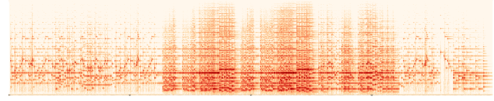
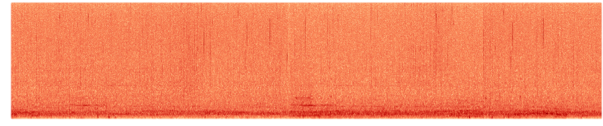
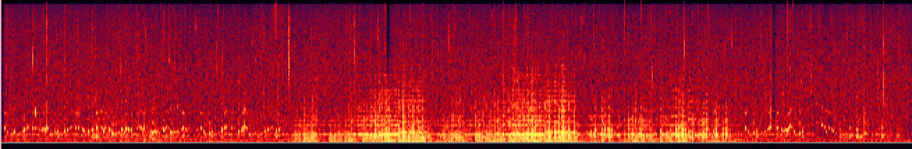
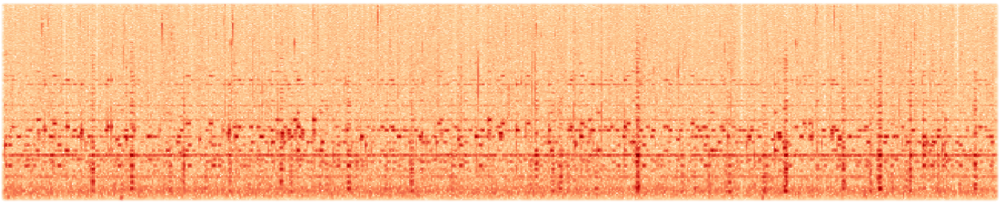
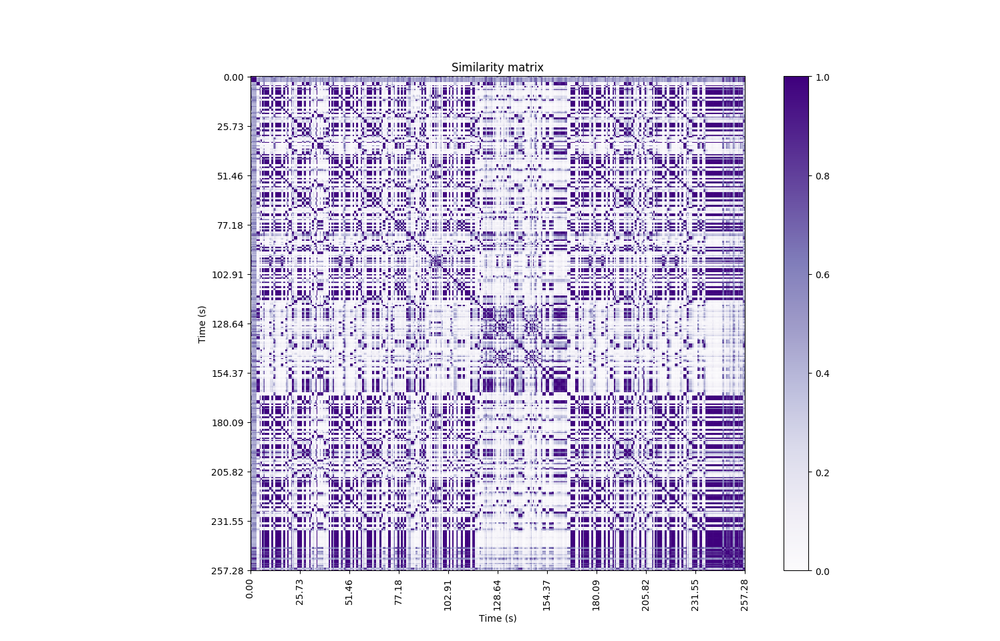

All perceived music and sound can be viewed as a compilation of atomic sound particles.
Granular synthesis is a method of composition and music production that allows manipulation of sound particles 10ms-1sec long, called “grains,” to create sound textures and time stretches.
The issue with current technology is that variability is gained only through randomizing a widely accepted group of parameters: arrangement, size and frequency of grains, and pitch.
A method of selecting grains more intelligently could provide more control over the texture than available technology.
Our innovation is to use a similarity matrix to choose grains that are similar to previous ones played.
Why
SMG allows the creation of unique blends of sounds.
By using a cross similarity matrix, two sounds can be blended together such that similar grains
from both sources are juxtaposed, forming a unification of the two.
For example, here is a mixture of Chopan's Raindrop Prelude with a found rain sample using chroma features.
The prelude:

Rain: It is fascinating how much this spectrum looks like rain on a glass window.

If we are to just overlap these two files the two maintain their individual identities in the texture and do not blend. Pardon the different colors.

Combined: Note the similarities to both previous spectrograms. Low frequency rumbling at the bottom and virtical streaks are present from the rain spectrogram. From the piano, we get horizontal notes, and a continuous drone one third from the bottom.

SMG can be used as a time stretch.
Like other granular synthesizers, SMG can produce a longer sample by overlapping long grains.
The similarity matrix allows the sound to unfold uniformly.
How it works
Take input sounds files, and any desired user parameters, such as grain density, grain length
Extract Desired features from the input signals. Can be Cepstra or Chroma, with desired distance measures
Compute Similarity Matrix at the level of feature vector
Starting at a random position in the first loaded track, the algorithm chooses a grain from a
preset, or adjustable, window size. The grain is then windowed using a desired windowing
function (Hann, Tukey, etc), and stitched into the output file with a given overlap.
Return an output of the desired length, granulated to the desired parameters.

Grain Selection Process
The grain selection process utilizes a cross- or self-similarity matrix. A self-similarity matrix of the Chopan Raindrop Prelude is depicted above. Based on the current grain, a new
grain is selected if it surpasses the threshold. With a high threshold, it can get locked into playing
a sort of mean of both sources that repeats. In an effort to combat this, we add a breakout factor to sometimes
move the selection window to a totally different part of the song.
Build
The code base for this project draws from a variety of class topics as well as literature on granular synthesis.
Librosa, Numpy, and Scipy are key libraries that provide feature extraction capabilities, matrix manipulation, and windowing functions.
We utilized similarity matrix and cross similarity matrix functions we made for an infinite jukebox for Homework 5. Our main workhorse function, granulate, combines
the core capabilities of various granular synthesis algorithm implementations with elements from the infinite jukebox concept. These functions are brought together by the
main object class, Granulator, that contains a variety of parameters for user control and modification of the output, and also makes for a much cleaner user interface to the python command line.
Working around limitations of the STFT
Similarity matrices rely on the output of a short term fourier transform.
To get appropriate frequency resolution (which is windowSize/2) and manage matrix use of memory,
the window must be an appropriate size.
A compromise between precision of grain data and better frequency resolution and memory use is found
around 512 samples, much larger than a typical grain. Thus, when grains are selected, we select randomly within the matching feature vector.
Suggestions for use
Cepstral and Chroma representations are both useful to hone the sound.
SMG allows the user to choose between two feature extractions methods, Cepstra and Chroma, to give them more control over the sound.
The choice between the two must be evaluated based on the source content. If the sources are tonal, and the desired result is also tonal, then extracting chroma features is the best option.
A step we could tke in the future to advance this program is to transpose one of the samples eleven times, and make similarity matrices comparing the second sample to each of the transposed versions of the first. This would make more similarity in the chroma domain, which would make more grains available for the granulator to choose from, and the choices may make more harmonic sense. For example, two grains that contain I chords would match up only after transposition.
If the source files or desired output is more rhythmic or textural, cepstra features yield a better result.
Cepstra produced noticeably better results with source source sounds with lots of transience. For example, Fire Crackling + a Bartok pizzicato movement worked very well.
Choice of distance measure impacts results.
The authors observed qualitative differences between sounds produced using the three common distance measures, cosine, euclidean, and manhattan, used for computing an audio similarity matrix. Cosine distance ignores amplitude differences, and resulting textures can have unexpected volume spikes. However, if input files are at similar volumes, cosine distance can be effective. Euclidean and manhattan distance measures react strongly to volume, and while using them can prevent volume spikes or drops, large changes in amplitude can dominate over the targeted features.
Conclusion/Results
With this project we were mainly concerned with
exploring whether the addition significantly improved the sound possibilities. While we have no study data to empirically
give evidence to this, we believe that it does.
Other algorithms may improve on what we have created in the past two weeks.
None of the authors have much experience with machine learning, and
they have never to our knowledge been applied to granular synthesis, but the idea of a long short term memory network trained
with data on grains level is intriguing.
Bringing this up to speed with current technology would help too.
Granulators currently on the market have more control over randomization, the
ability to transition fluidly from one parameter set to another, and the ability to save parameter presets. This
could be accomplished by integrating a similarity matrix to another existing platform, but it may not be difficult to do this
from scratch. The authors believe that the addition of a similarity matrix to a more robust granular synthesizer
could bring additional control and creative possibilities to granular synthesis.
Audio
Self-Similarity Matrix with Lux Aeterna by ligeti:
Fire crossed with Bartok pizz. It seems to work pretty well with transients.
Crowd + Birds. A very short grain size made the crowd sound like water.
Oscar Peterson Trio - Perdido crossed with Monk - Blue Monk: short grain size.
Perdido and Blue Monk with longer grains. Although this was made with chroma features, the granulator picked all piano sounds.
Hissing Poet
Downloads
The Team
Ben Krege
JohnKrege2018@u.northwestern.edu
317-775-0018